ねこと学ぶ
ねこたちと一緒に、33文字のアルファベットを探検する旅へ。
森の奥には、言葉という宝物が待っています。
文字からはじめて、上級文法まで。
33文字 → 発音のルール → 名詞・動詞・6つの格 → 形動詞・副動詞・仮定法。
全52ユニット・563問。順番どおりでなくても進められます。
КА́РТА ЛЕ́СА — この森のちず
いまここ あるききった場所 まだ霧のなか
ねこ図鑑
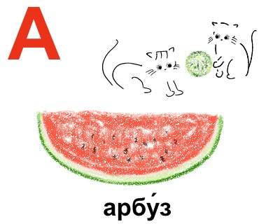
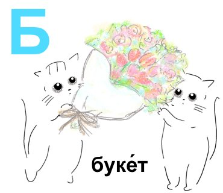
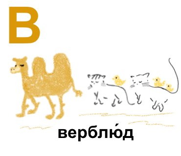
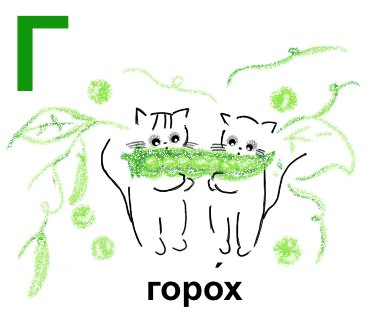
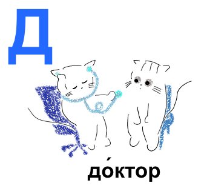
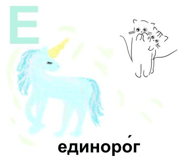
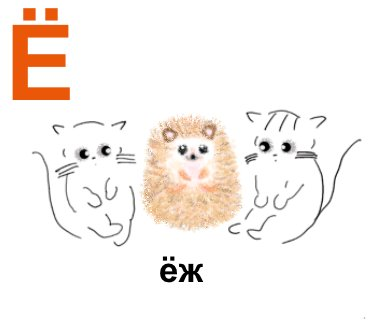
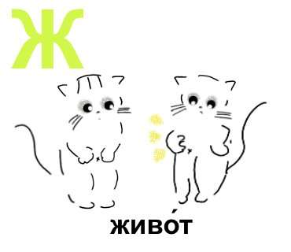
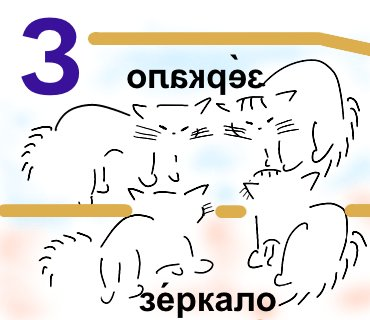
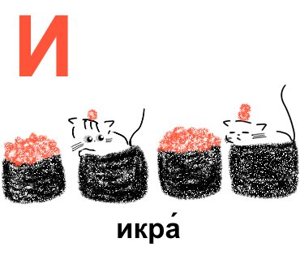
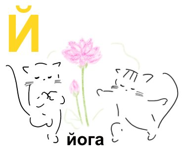
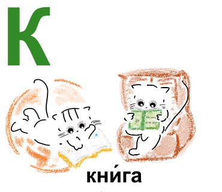
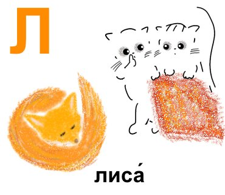
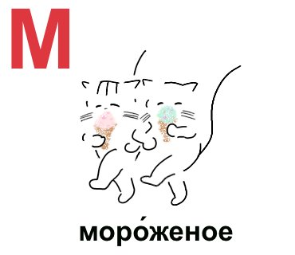
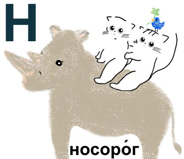
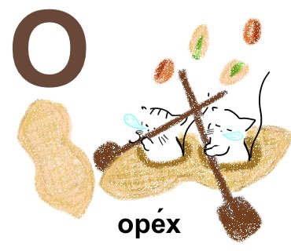
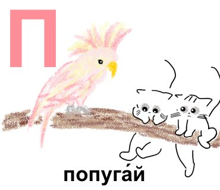
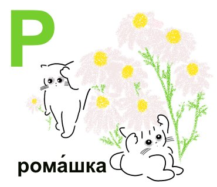
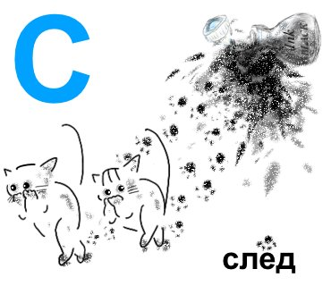
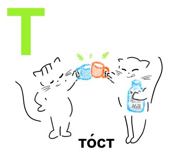
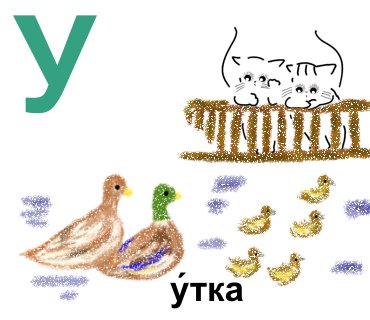
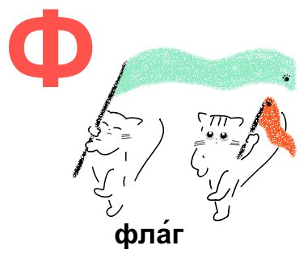
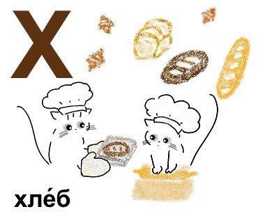
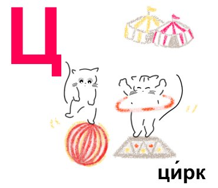
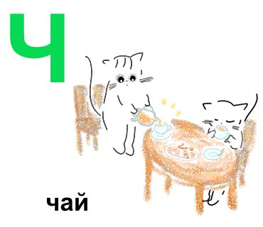
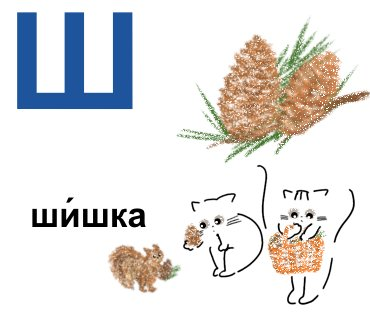
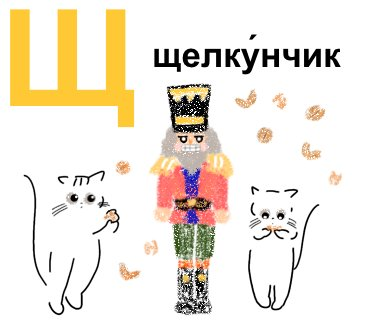
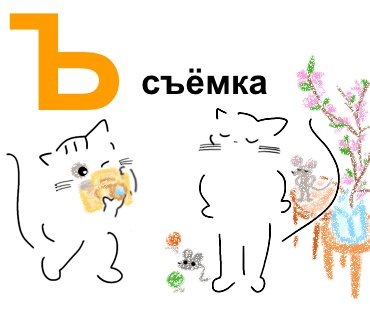
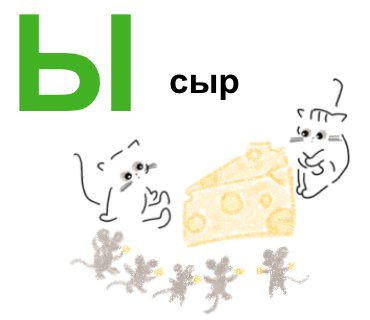
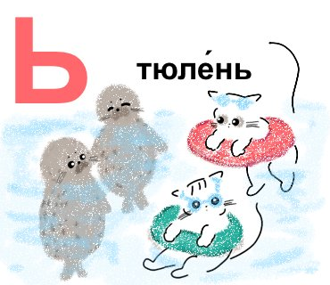
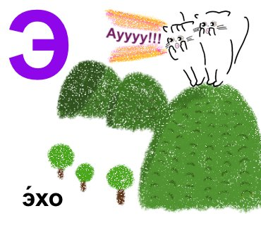
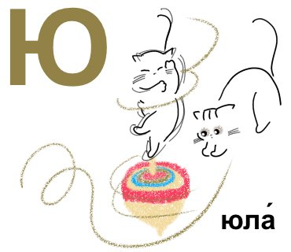
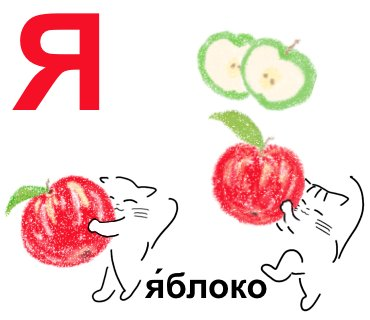
ロシア語の発音を理解するためのきほんのルールをまとめました。
有声子音（б, в, г, д, ж, з）が単語の最後に来ると、無声音化して濁らない音に変わります。
• хлеб（パン・Х）→ /フリェープ/（б → /п/）
• флаг（旗・Ф）→ /フラーク/（г → /к/）
• арбу́з（スイカ・А）→ /アるブース/（з → /с/）
• верблю́д（ラクダ・В）→ /ヴェるブリュート/（д → /т/）
アクセントのない о, а, е は、弱く曖昧な音に変わります。
• о（非強勢）→ /ɐ/（「ア」に近い）
例：молоко́ → /マ・ラ・コー/（3つの о のうち、強勢の о だけがはっきり「オ」）
• е（非強勢）→ /i/（「イ」に近い）
例：единоро́г（Е）→ /イェヂナろーグ/
ほとんどの子音には、硬い音と軟らかい音の2種類があります。
• 軟らかくなる条件：ь がつく、または後ろに е, ё, ю, я, и が来る
• мат（チェスの詰み）→ 硬い「ト」
• мать（母）→ 軟らかい「チ」（ь で軟音化）
• день（日・ь）→ 軟らかい「ニ」
ж, ш の後の и は発音上 /ɨ/ に近くなりますが、綴りは必ず и です。
• живо́т（Ж） ши́шка（Ш）
ч, щ は常に軟らかい音なので、後の и もそのまま「イ」。
• чай（Ч） щелку́нчик（Щ）
ロシア語はアクセントの位置で意味が変わることがあります。アクセントは必ず覚えましょう。
下の3組は綴りがまったく同じで、 アクセントの位置だけがちがいます。♪ を押して聞き比べてみてください。
ду́хи は дух（精霊）の複数形。духи́（香水）のほうは、はじめから複数の形しか持たない名詞です。
非強勢の母音は弱くなるので、アクセントを間違えると単語全体の響きが変わります。
ロシア語では、子音が並ぶとき後ろの子音が前の子音の発音に影響します。これを逆行同化と言います。
有声同化：清音 + 有声子音 → 前の清音も濁る
• с горо́хом（Г） → с が г の影響で /з/ に濁り「ズ・ガろーハム」
• сде́лать（する） → с が д の影響で「ズヂェーラチ」
• футбо́л（サッカー） → т が б の影響で「フドボール」
無声同化：有声子音 + 清音 → 前の有声子音も清音になる
• во́дка（ウォッカ） → д が к の影響で /т/ になり「ヴォートカ」
• ло́жка（スプーン） → ж が к の影響で /ш/ になり「ローシカ」
書き方は変わらず、発音だけが変わります。耳で聞いて慣れていきましょう。
他のヨーロッパ語にはない、ロシア語ならではの文字を復習しましょう。
母音 и に屋根（弧）がついた、子音として扱われる文字。
英語 yes の「y」に近い音。必ず他の母音と組み合わせて使います。
例：Ой!（あっ！） Ай!（いたっ！） йо́га（Й）
音を持たない文字。直前の子音を「軟らかく」します。
例：слова́рь（辞書） тюле́нь（アザラシ・Ь） мать（母）
音を持たない文字。子音と母音を「分けて」発音する合図です。
接頭辞 + 母音で始まる語根の間に入ります。
例：съёмка（撮影・Ъ） объе́кт（対象） подъе́зд（玄関）
「ウ」と「イ」の中間の音。舌を後ろに引いて「ィ」を出すイメージ。
• 語頭には絶対に来ない（必ず子音の後）
• 発音は難しいですが、綴りのルールが明確（前述）
例：сыр（チーズ・Ы） мы（私たち）
е（=「ィエ」）と違って、前に「ィ」が入らない硬いエの音。
主に語頭や外来語で使われます。
例：э́то（これ） э́хо（こだま・Э） экза́мен（試験）
不定形と意味を書き、6つの形を埋めましょう。語尾だけ色を変えると、規則が見えてきます。
| 不定形 意味 | |
|---|---|
| я | |
| ты | |
| он / она́ | |
| мы | |
| вы | |
| они́ | |
| 過去 | |
| 不定形 意味 | |
|---|---|
| я | |
| ты | |
| он / она́ | |
| мы | |
| вы | |
| они́ | |
| 過去 | |
| 不定形 意味 | |
|---|---|
| я | |
| ты | |
| он / она́ | |
| мы | |
| вы | |
| они́ | |
| 過去 | |
| 不定形 意味 | |
|---|---|
| я | |
| ты | |
| он / она́ | |
| мы | |
| вы | |
| они́ | |
| 過去 | |
名詞・形容詞を1語ずつ選び、6つの格を埋めましょう。単数と複数を分けて書くと整理できます。
| 単数： | 男性 | 女性 | 中性 | 複数 |
|---|---|---|---|---|
| 主格（〜が） | ||||
| 生格（〜の） | ||||
| 与格（〜に） | ||||
| 対格（〜を） | ||||
| 造格（〜で・〜と） | ||||
| 前置格（〜について・場所） |
| 単数： | 男性 | 女性 | 中性 | 複数 |
|---|---|---|---|---|
| 主格（〜が） | ||||
| 生格（〜の） | ||||
| 与格（〜に） | ||||
| 対格（〜を） | ||||
| 造格（〜で・〜と） | ||||
| 前置格（〜について・場所） |
新しい名詞に出会ったら、どのグループかを決めてから書き写しましょう。性（男・女・中）も忘れずに。
| ① 数えられる名詞 単数 → 複数 ／ 性 |
② 数えられない名詞 いつも単数 ／ 量の言い方 |
③ 複数だけで使う名詞 単数の形がない |
|---|---|---|
| кни́га → кни́ги（女） | чай（ча́шка ча́я） | де́ньги（お金）・духи́（香水） |
※ ②は「入れ物・分量＋生格」で量を表します（стака́н воды́）。③は動詞も所有代名詞も複数形にします（Часы́ иду́т.）。
「今日の復習」に出た語を書きためましょう。3日後に、右側を隠して思い出せるか試します。
| ロシア語（アクセントつき） | 意味 | 使った文・気づいたこと |
|---|---|---|
意味が分かったからではなく、音がきれいだった・見た形がおもしろかった・使ってみたくなった—— そんな理由でかまいません。出会った場所も書いておくと、あとで読み返したときに、その日のことまで戻ってこられます。
| ロシア語（アクセントつき） | 意味 | どこで出会ったか・なぜ好きか |
|---|---|---|
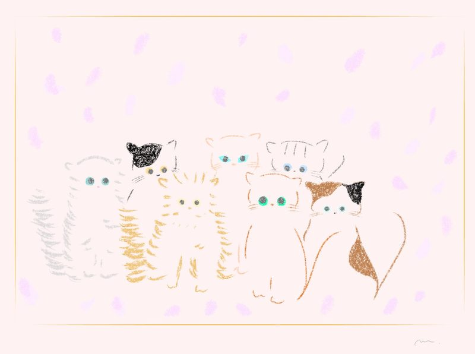
Тепе́рь весь алфави́т — твой!
アルファベットは全部あなたのもの
33匹のねこたちと、キリル文字の森を旅しきりましたね
記念にオリジナルのアルファベット表をお贈りします。